管理员与 mentor 校园书桌
以下为真实 Edge 浏览器截图，使用独立 SQLite 合成验收数据；没有操作正式站。网站入口可交互，截图只用于核对视觉和响应式。静态校园背景、原有字体与键位保留，没有恢复场景动效。
管理员
桌面 1440×900 · 真实待办与课程文件夹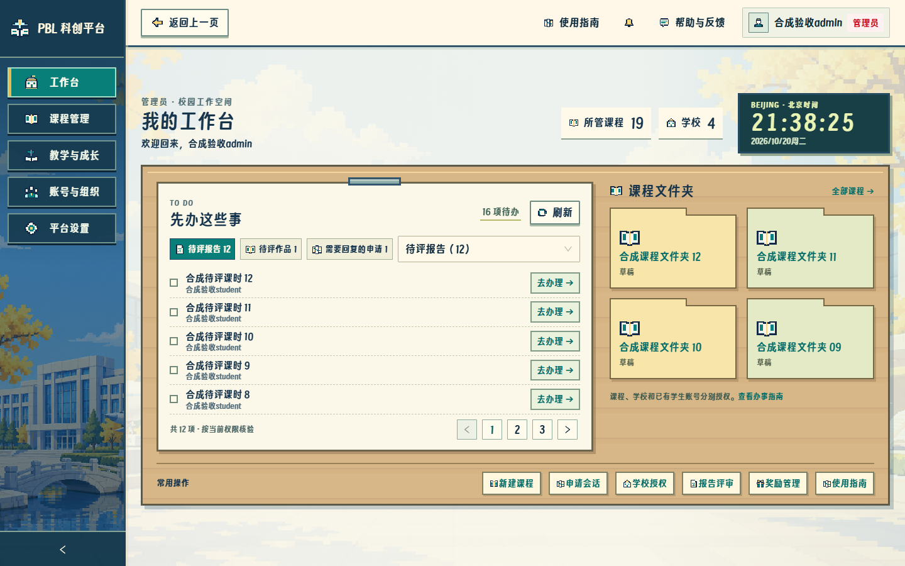
桌面 1280×720 · 概览一屏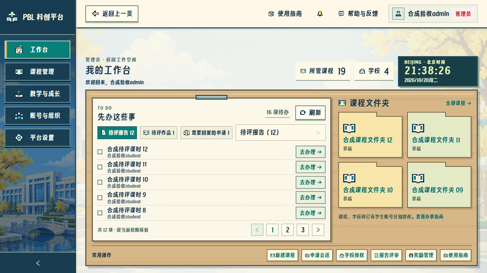
平板 768×1024 · 正常纵向滚动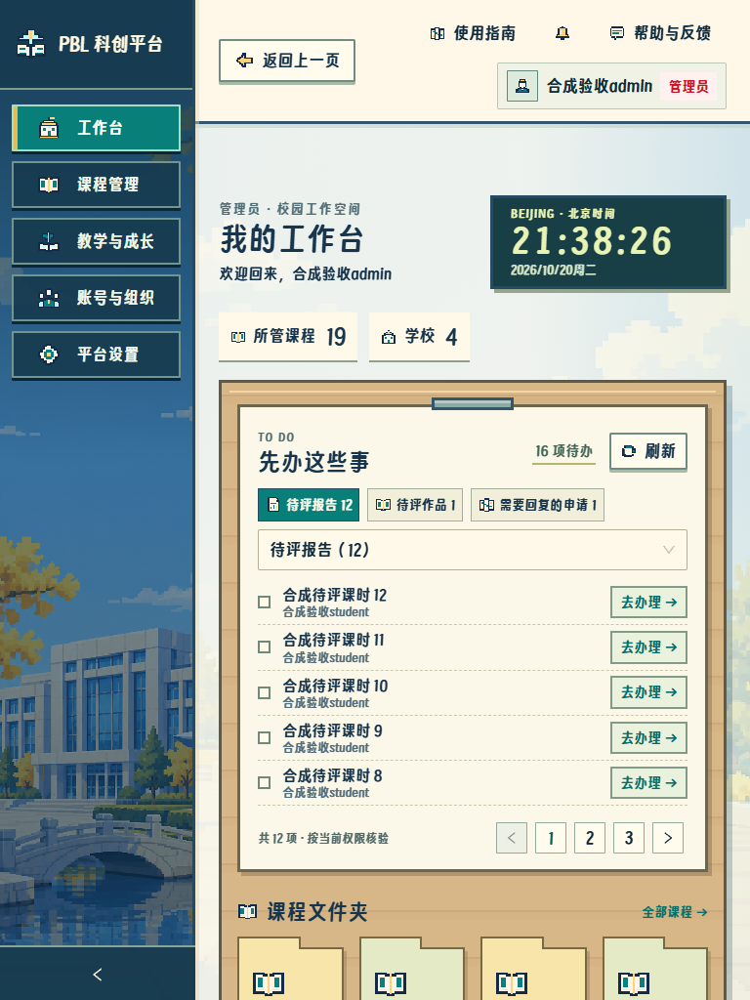
手机 390×844 · 侧栏可唤起，正文继续滚动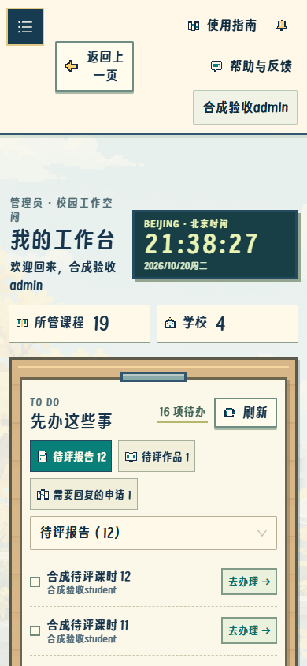
mentor
桌面 1440×900 · 仅显示本人授权范围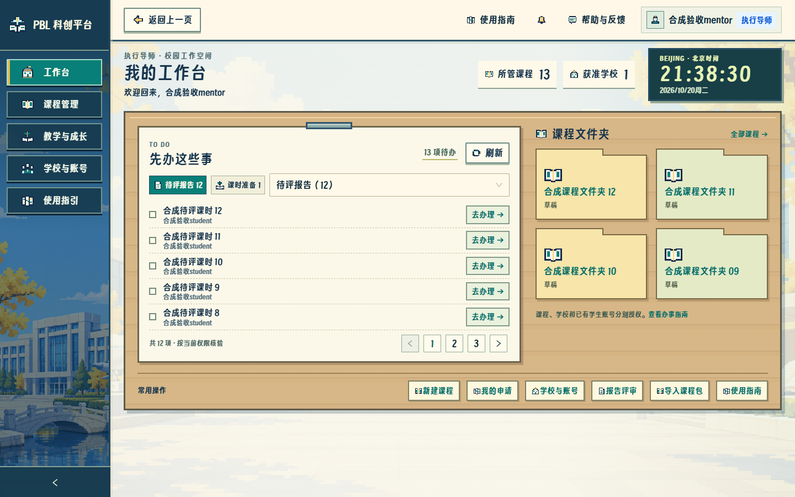
平板 768×1024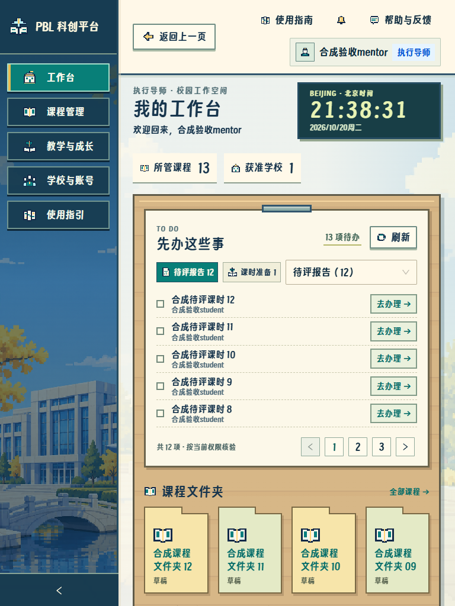
手机 390×844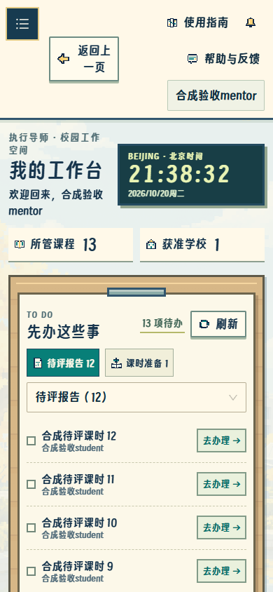
指南与学校管理授权
管理员使用指南 · 权限、路径与去办理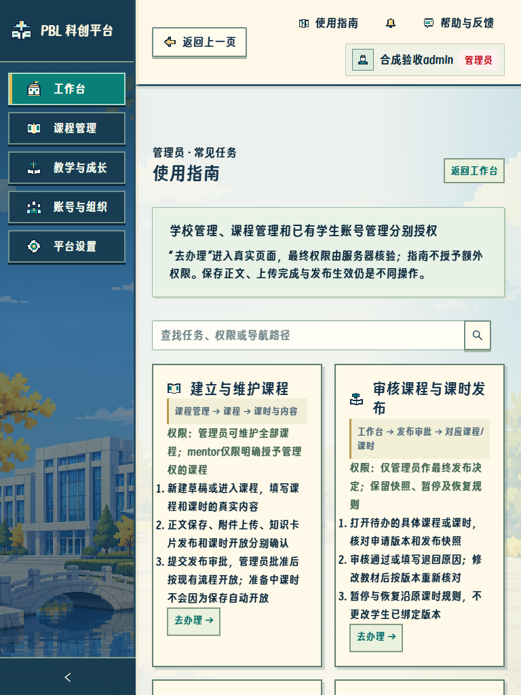
mentor 使用指南 · 原学校申请流程保留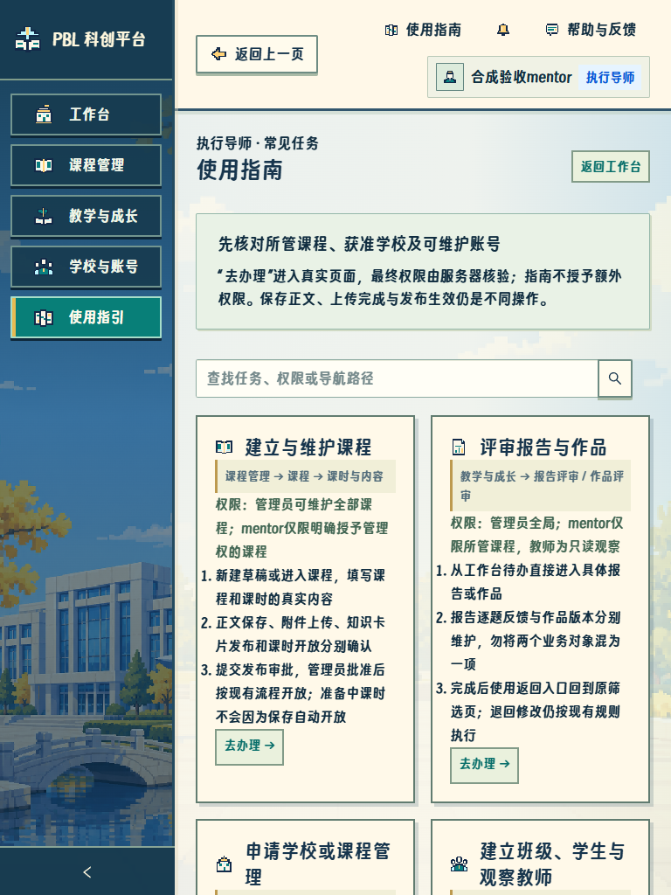
直接学校授权已保存 · 独立授权来源与原申请记录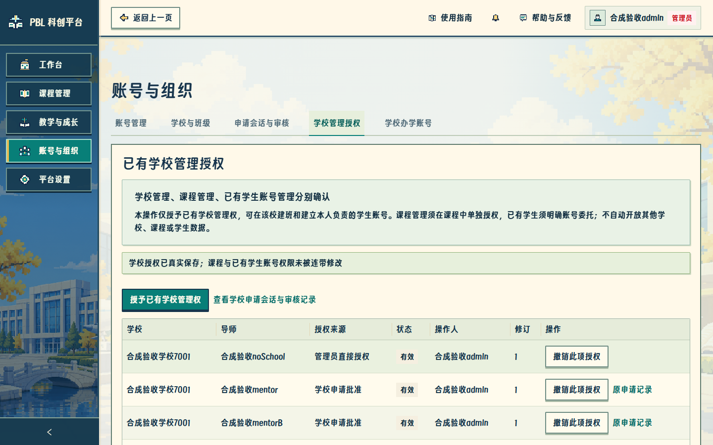
旧申请链接仍进入原会话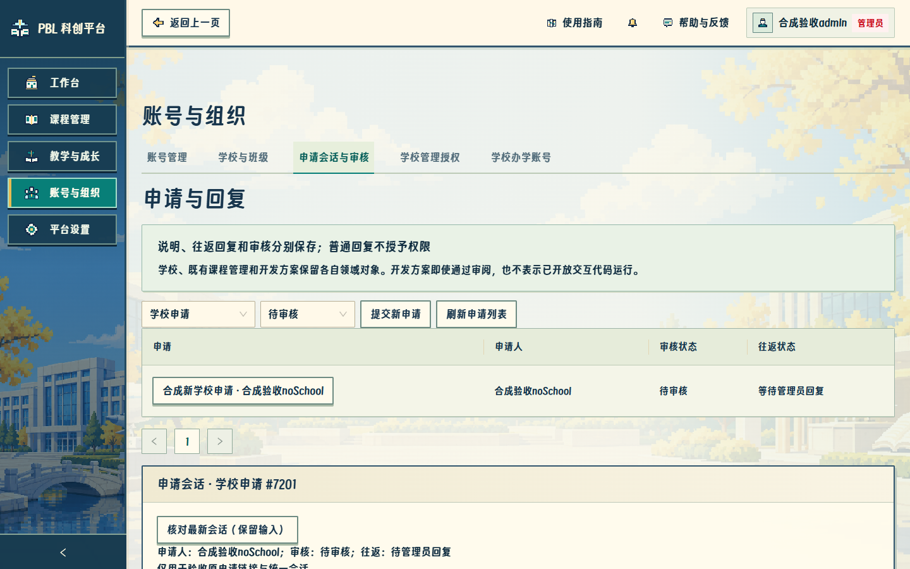
屏幕尺寸通过真实 Edge 设置 CSS 视口验证，未声称使用手机硬件或执行公网部署。私有账号和密码仅存本机 .local，不包含在截图、ZIP 或仓库中。